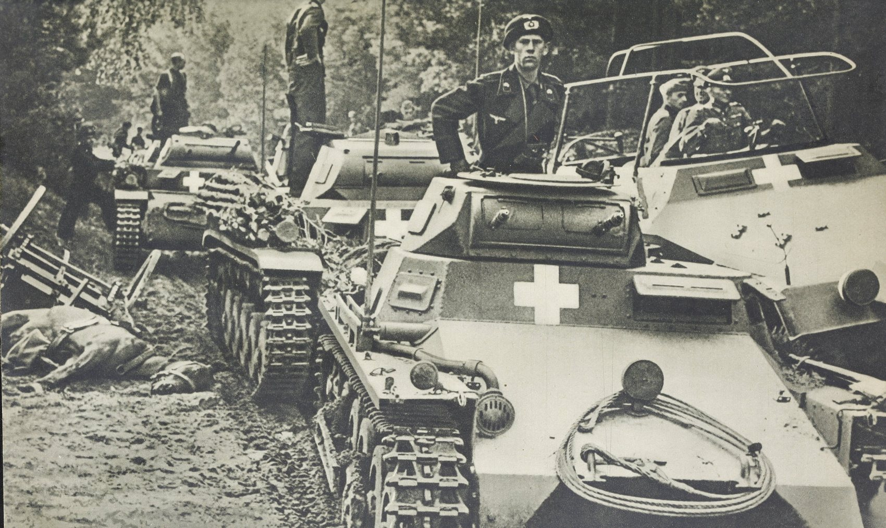
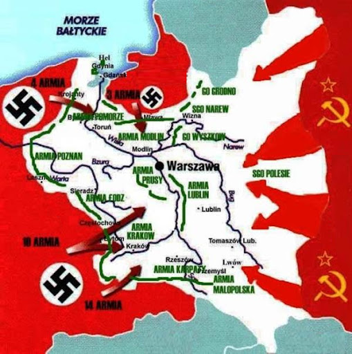
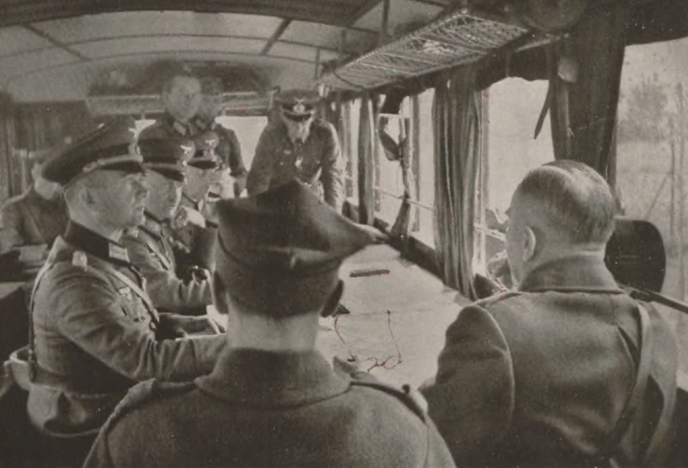
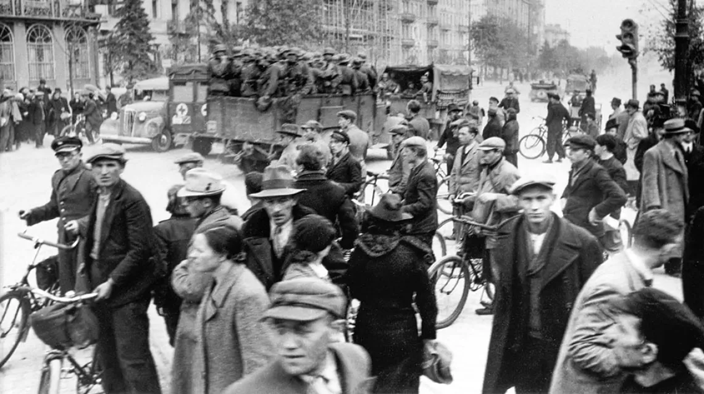

Kampania Polska 1939
Wprowadzenie
Kampania Polska, znana również jako Wojna Obronna Polski 1939 roku, była pierwszym konfliktem zbrojnym II wojny światowej. Rozpoczęła się 1 września 1939 roku od ataku III Rzeszy na Polskę, a zakończyła 6 października 1939 roku kapitulacją Samodzielnej Grupy Operacyjnej „Polesie” w bitwie pod Kockiem. Pomimo ogromnej przewagi liczebnej i technologicznej agresorów, polskie wojsko stawiło heroiczny opór.
Przyczyny i przebieg
Atak na Polskę był realizacją planu Blitzkrieg, zakładającego szybkie pokonanie przeciwnika. Polska, zaatakowana zarówno od zachodu przez Niemcy, jak i od wschodu przez Związek Radziecki (17 września), znalazła się w sytuacji bez wyjścia. Mimo tego Polacy bronili się w wielu kluczowych bitwach, takich jak:
- Bitwa nad Bzurą (9–22 września) – największe starcie kampanii.
- Obrona Warszawy (8–28 września).
- Bitwa pod Kockiem (2–6 października) – ostatnie starcie regularnych oddziałów polskiego wojska.
Skutki Kampanii Polskiej
Kampania zakończyła się klęską militarną Polski, ale zapoczątkowała trwającą sześć lat II wojnę światową. Agresja Niemiec i ZSRR na Polskę złamała postanowienia międzynarodowe, takie jak pakt o nieagresji oraz zobowiązania wobec Ligi Narodów. Polska, mimo okupacji, nigdy nie skapitulowała politycznie, a jej rząd działał na uchodźstwie, kontynuując walkę w koalicji aliantów.
Pamięć i dziedzictwo
Kampania Polska z 1939 roku jest symbolem odwagi i niezłomności narodu polskiego. Każdego roku 1 września Polacy oddają hołd tym, którzy bronili ojczyzny w trudnych chwilach. Warto pamiętać, że kampania ta stała się początkiem oporu, który trwał przez cały okres wojny.
